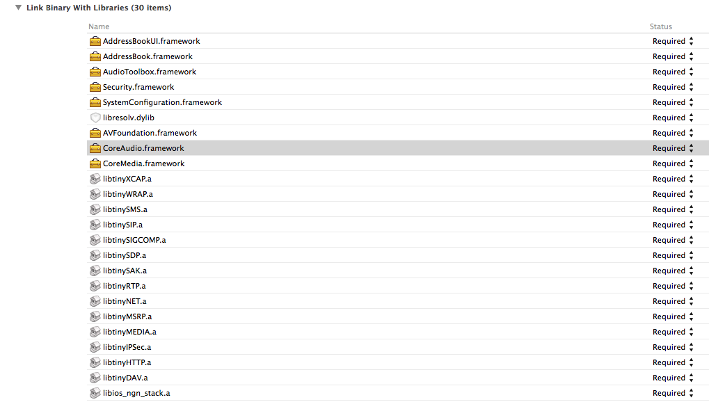
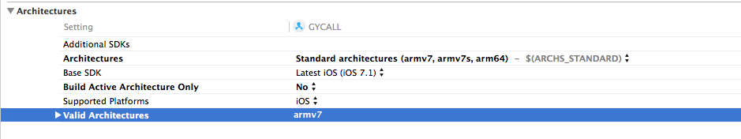
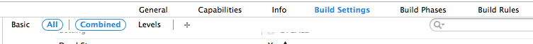
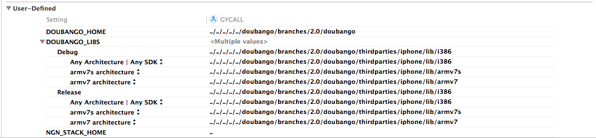
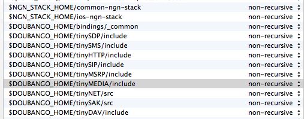
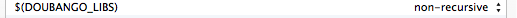
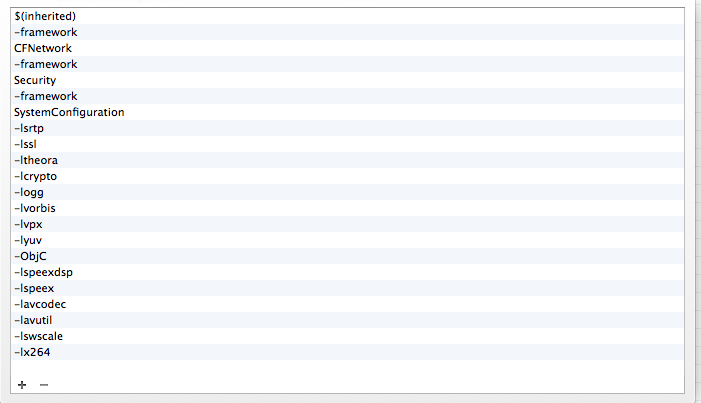
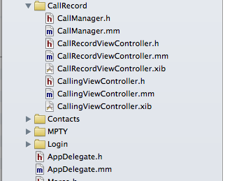

如何添加doubango工程
Writed by luckychunxiao email: luckychunxiao#163.com
1.把iOS-ngn-stack拖入自己工程
2.build phases 中 link binary with libraries中添加lib库（添加以下全部）

3.build settings 中 architectures 修改Valid Architectures 为armv7

4.build settings 中点击最上面的+号，添加User-Defined如图


5.build settings 中找到Search Paths添加
Header Search Paths:

Library Search Paths:

6.build settings 中找到Linking在Other Linker Flags添加

7.把引用到iOSNgnStack.h的.m文件修改为.mm
